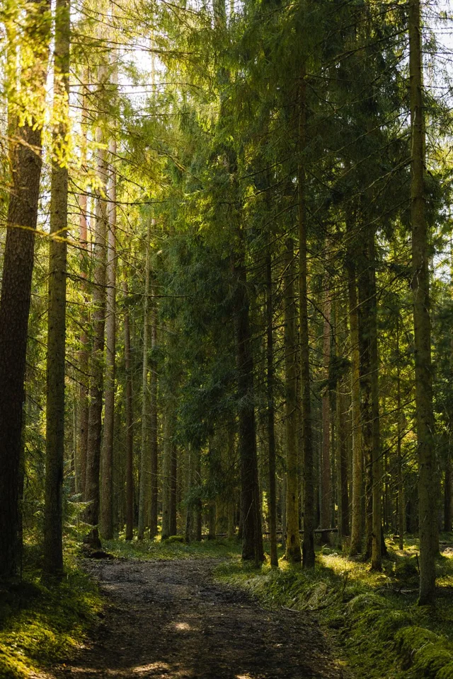
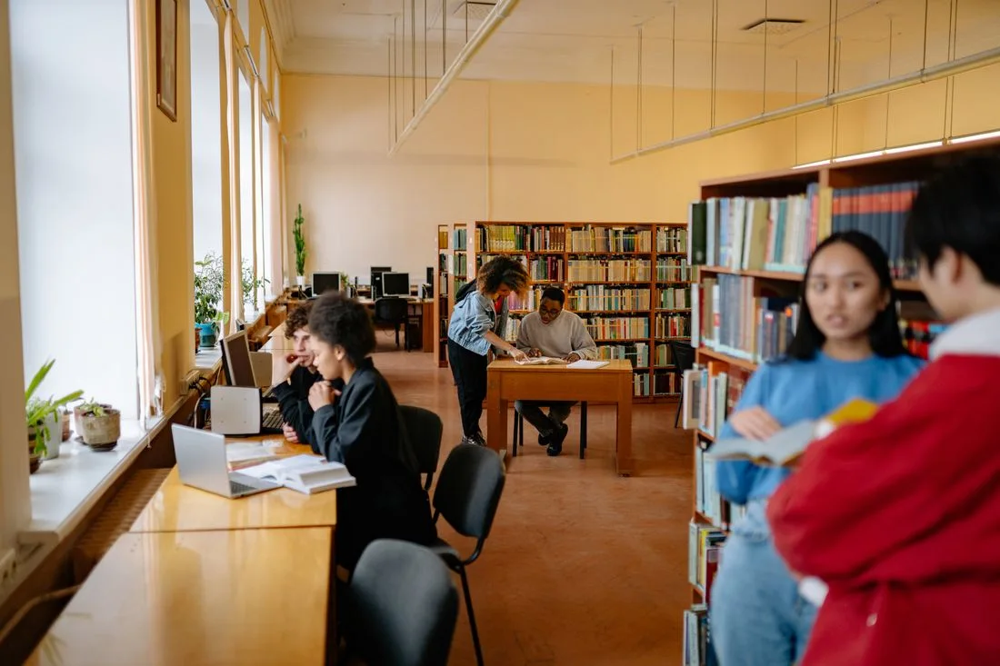

ОГЭ и ЕГЭ · 9–11 классы
Справочник для учеников
5 глав · 21 урок

Глава 1 · 5 уроков
Конспектирование
Что записывать, сколько времени на это тратить и как потом пользоваться своими записями.

Глава 2 · 4 урока
Отдых
Сколько времени оставлять на сон и перерывы, как отдыхать после школы и куда поставить хобби в загруженную неделю.

Глава 3 · 6 уроков
Процесс подготовки
Как составить план по предмету, чередовать теорию с практикой и по своим результатам выбирать, что решать дальше.

Глава 4 · 3 урока
Самочувствие
Что делать, когда дома давят, родители почти не участвуют в подготовке или тревога мешает заниматься.

Глава 5 · 3 урока
Интересно
Частые вопросы учеников про баллы, подготовку с нуля и выбор направления после школы.